Brain-wide representations of olfactory navigational behavior in C. elegans
Helena Casademunt, Aravi Samuel

C. elegans


Varshney et al. (2011)
Many ORNs

Bargmann and Horvitz (1993)
Microfluidic manifolds

Lin et al. (2023)
Manifold responses

Lin et al. (2023)
Combinatorial codes?

Lin et al. (2023)
Brain-Wide Imaging during Chemotaxis
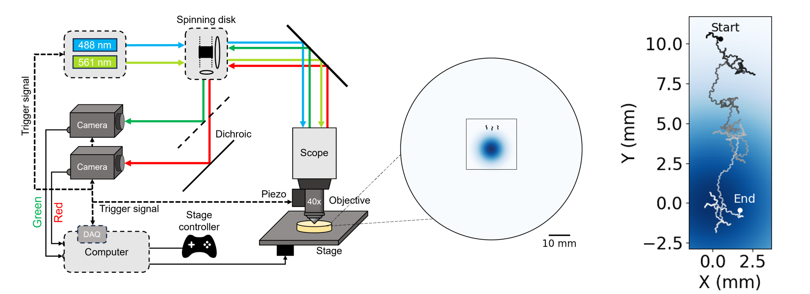
Neuronal atlases
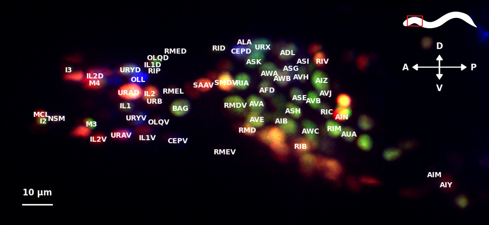
John Calarco, Mei ZhenYemini et al. (2021)
Brain-wide Imaging
Freely-moving and immobilized worms
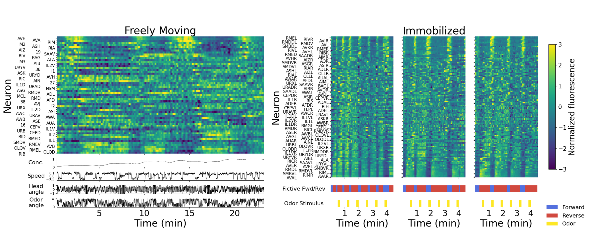
Chemotaxis to diacetyl and IAA

Oriented movement in gradients
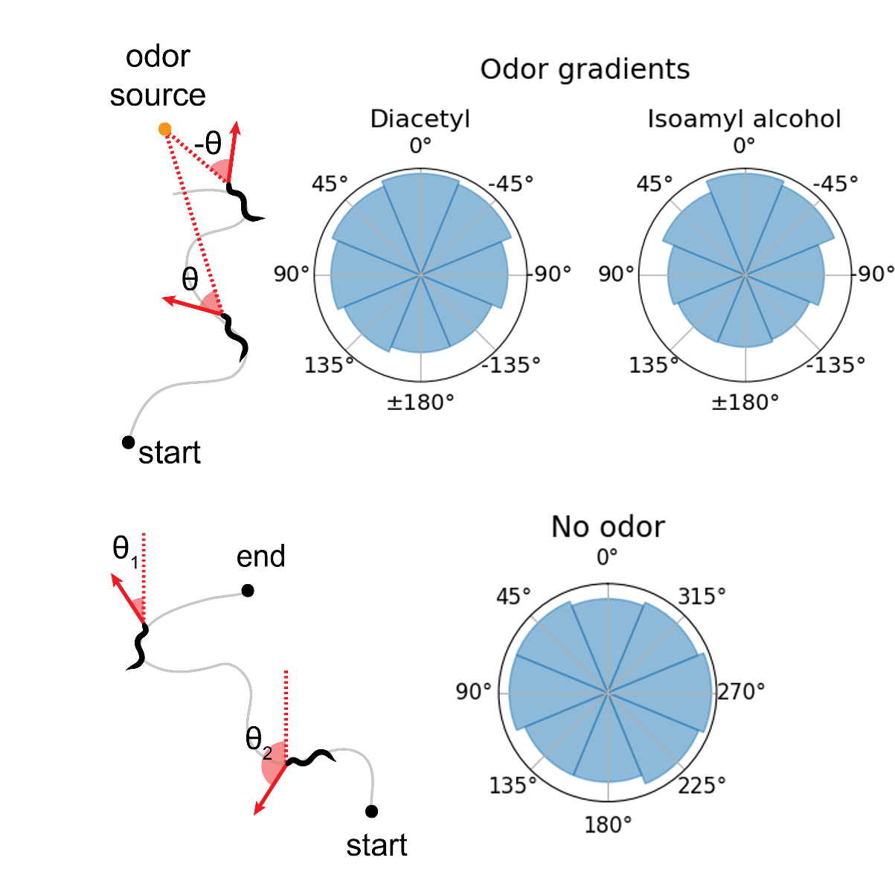
Runs and pirouettes
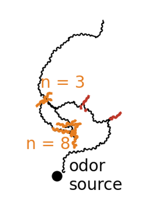
Immobilized worms
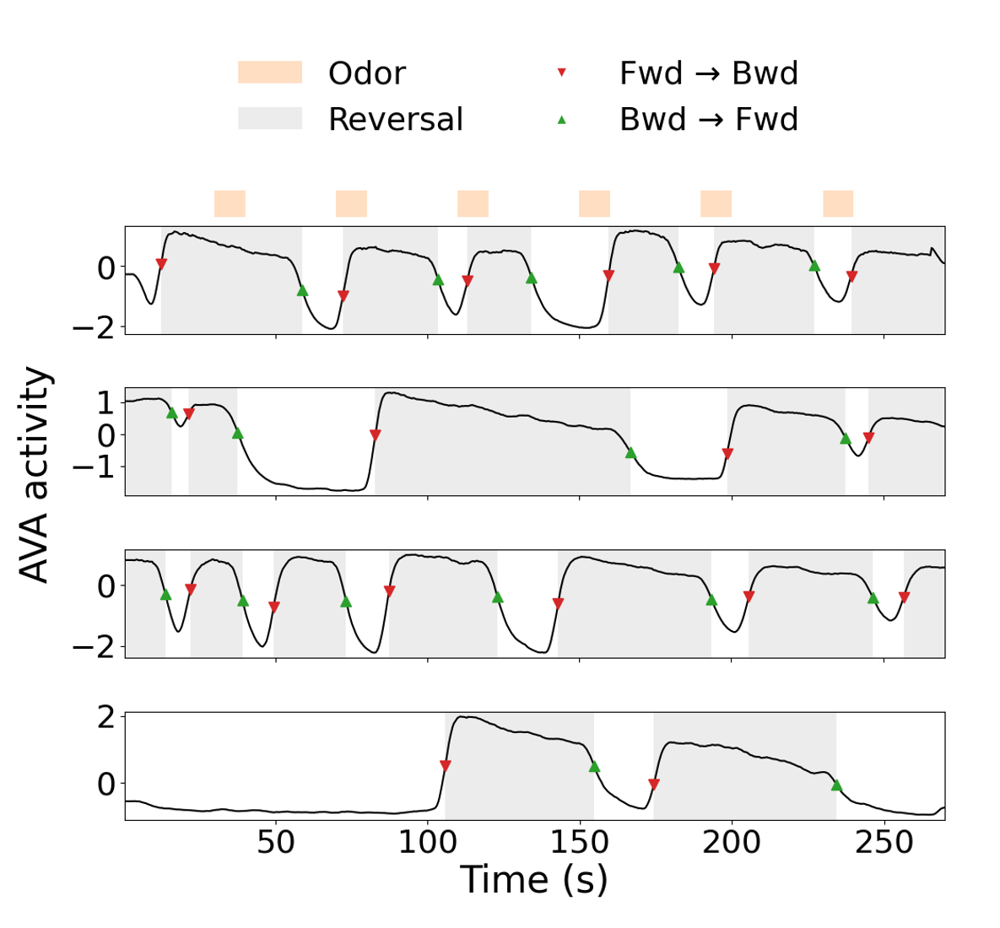
Weak behavioral response
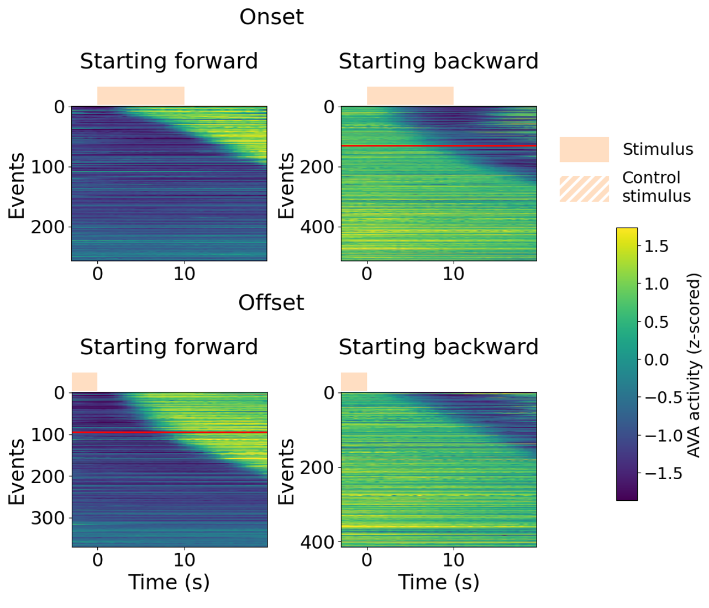
Altered behavioral statistics
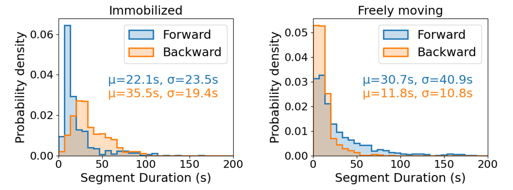
Brain-wide differences between
immobilized and moving worms

Focused differences between
chemotaxis and free navigation

Different neuron-behavior correlations

Different neuron-behavior correlations


OLQ
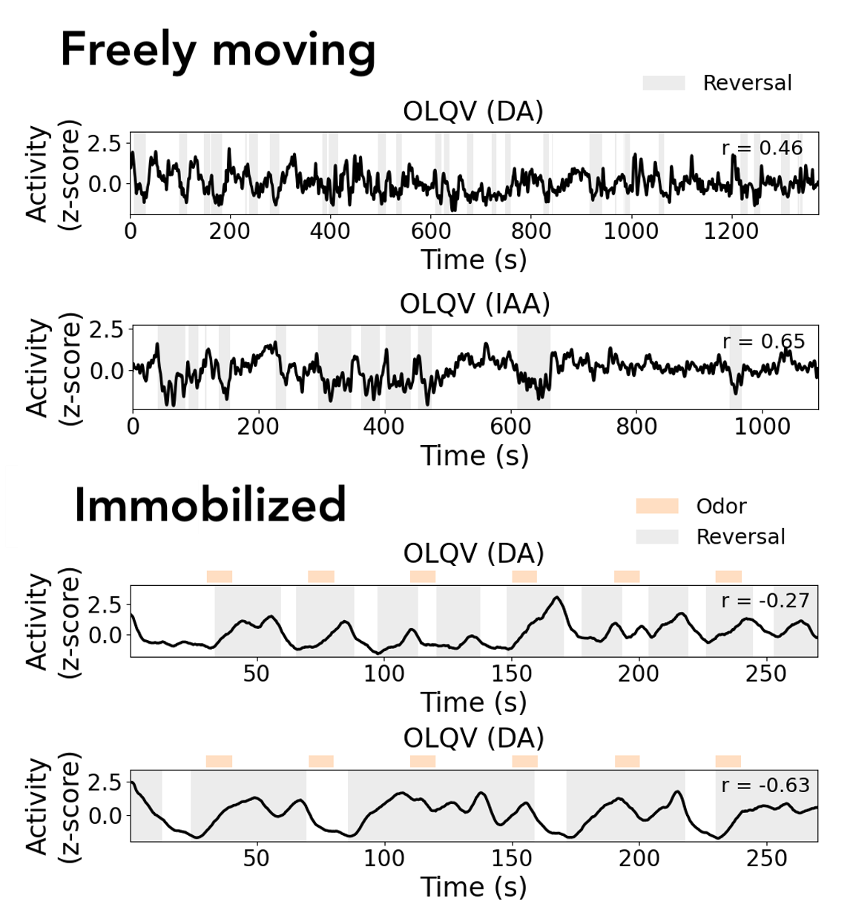
BAG
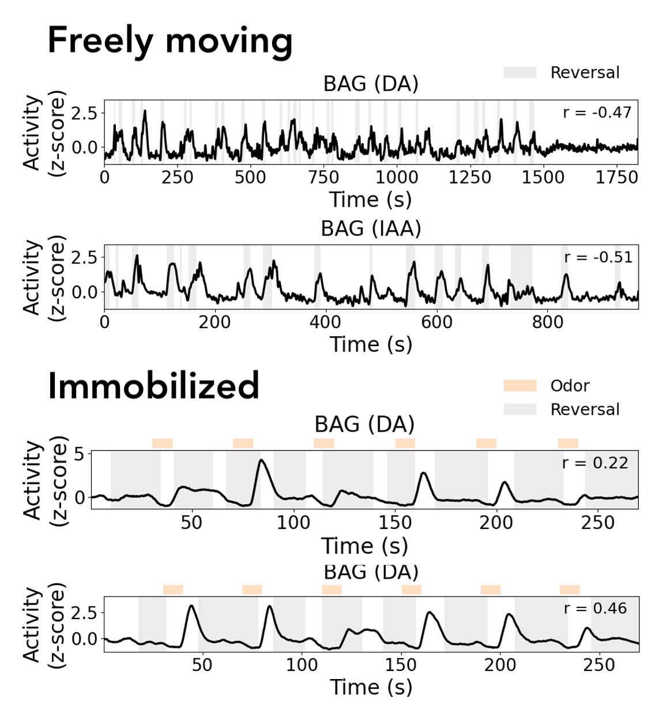
AWA senses concentration changes
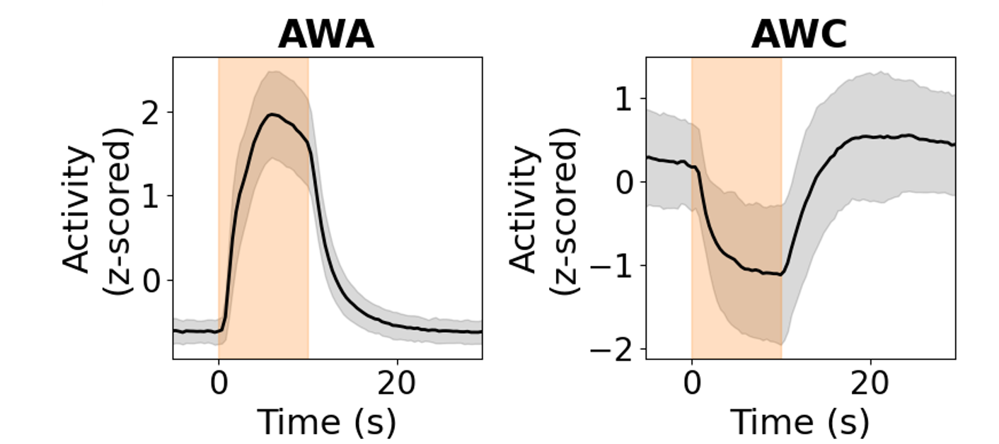
AWA senses concentration changes
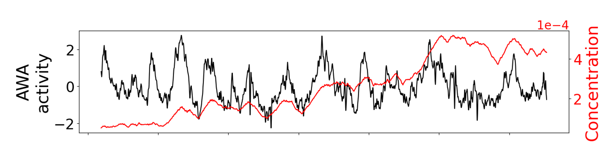
Adaptive Dynamical Threshold for Sensitivity
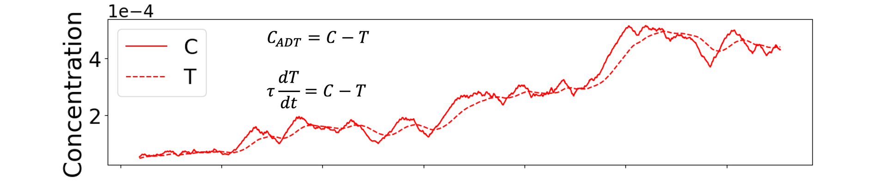
Adaptive Dynamical Threshold for Sensitivity
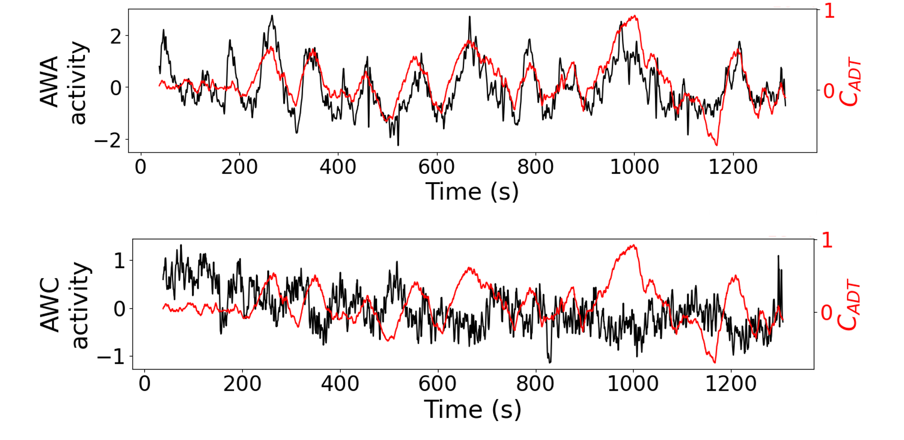
Functional mapping of olfactory sensorimotor circuit
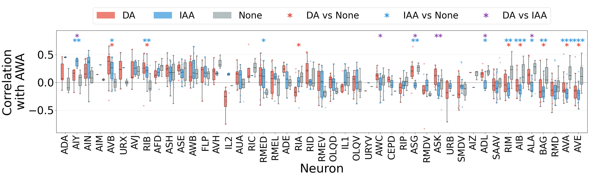
Functional mapping of olfactory sensorimotor circuit
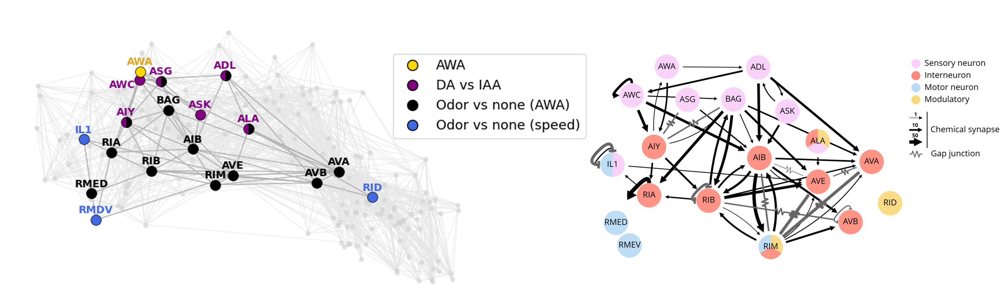